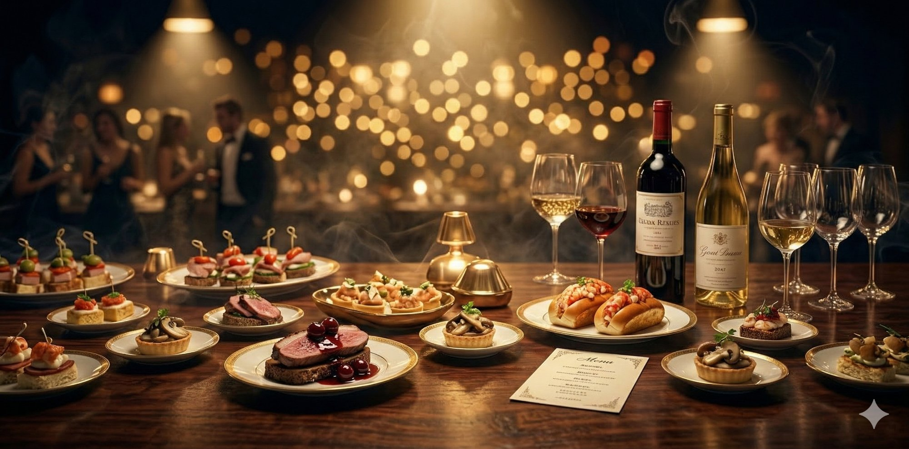

2026年 3月 22日（日）当日のタイムテーブル
来場後は受付を済ませ、名札を付けて着席してお待ちください。
当日の流れと各コンテンツの紹介を行います。
〜知耕実学でアグリを増やせ！サバイバル・クイズ〜
6名程度の班に分かれ、クイズ×ギャンブルでポイントを稼ぐゲームです。
思い出の場所を自由に散策し、記念撮影をお楽しみください。
立食形式で食べ物とお酒を楽しみながら、旧友との交流をお楽しみください。
お忘れ物のないようお気をつけてお帰りください。
会場の完全撤収時刻です。
同窓会終了後、2次会の開催を予定しています。当日参加を希望される方は、運営メンバーにお声掛けください。

After Survey
皆さまの率直なご感想をお聞かせください。今後の同窓会をより良くするために活用いたします。